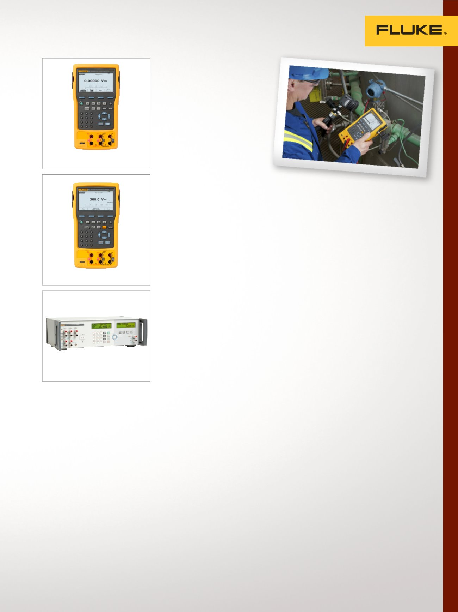

5
Étalonnage de boucle électrique, multifonction et mA
Étalonneurs
multifonction
Ces étalonneurs de terrain
et d'établi fournissent une
source, simulent et mesure
pression, température et
signaux électriques avec une
précision exceptionnelle.
Étalonneur de processus
détaillé 753
Outil à main robuste pour source,
simulation et mesure de pression,
température et signaux électriques.
•
Mesure de volts, mA, RTD,
thermocouples, fréquence
et ohms pour tester capteurs,
transmetteurs et
autres instruments
•
Source/simulation de volts,
mA, thermocouples, RTD,
fréquence, ohms et pression pour
l’étalonnage de transmetteurs
•
Alimentation de transmetteurs
en cours de test avec
l'alimentation de boucle et
mesure de mA simultanée
•
Téléchargement de procédures
et chargement de résultats
d'étalonnage à partir
d'étalonneurs de terrain
•
Étalonnage identifiable NIST
Étalonneur Process de
documentation 754 avec HART
Outil robuste et fiable pour
l'étalonnage, la maintenance
et le dépannage d'instruments
HART et autres.
•
Mesure de volts, mA, RTD,
thermocouples, fréquence
et ohms pour tester capteurs,
transmetteurs et
autres instruments
•
Source/simulation de volts,
mA, thermocouples, RTD,
fréquence, ohms et pression pour
l’étalonnage de transmetteurs
•
Prend en charge les modèles de
transmetteurs HART populaires,
avec une prise en charge de
commandes spécifiques aux
appareils supérieure à tout autre
étalonneur HART de terrain
•
Téléchargement de procédures
et chargement de résultats
d'étalonnage à partir
d'étalonneurs de terrain
•
Étalonnage identifiable NIST
Étalonneur de processus
de précision 7526A
Meilleur équilibre prix-précision
pour l'étalonnage d'instrument de
mesure de processus de température
et de pression.
•
Recherche et mesure la tension
CC, le courant, la résistance, les
signaux RTD et les thermocouples
•
Mesure la pression avec les mod-
ules de pression
Fluke 700/525A-P
•
Inclut une source d'alimentation
en boucle de 24 VCC, une
fonction de test de commutateur
automatisée et mesure
de 4 mA à 20 mA
•
Étalonnage identifiable NIST
753
7526A
754